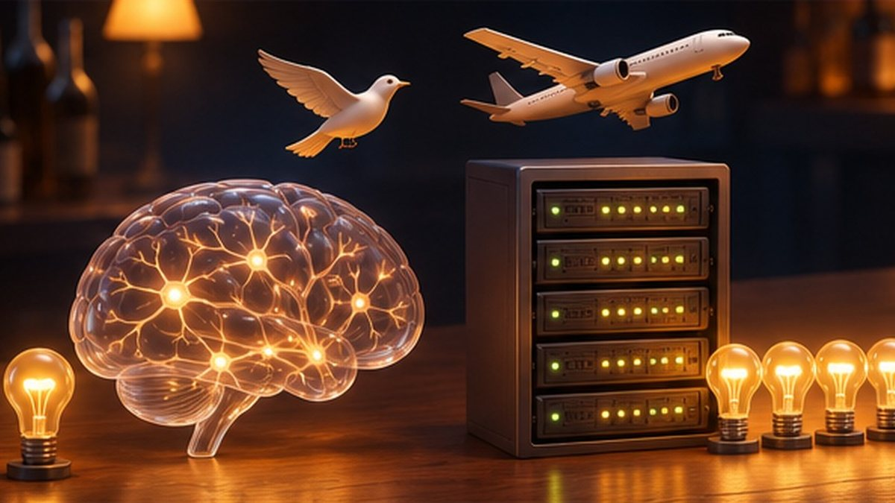
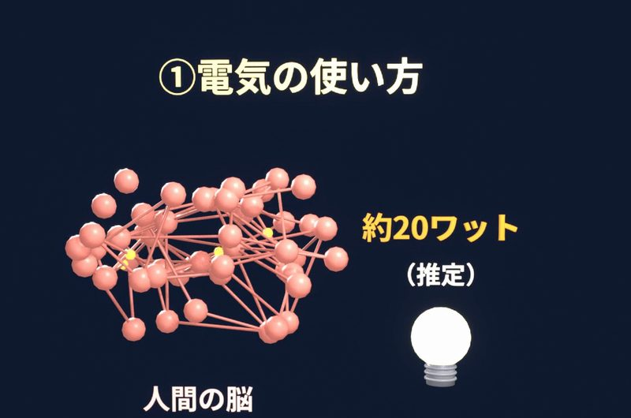
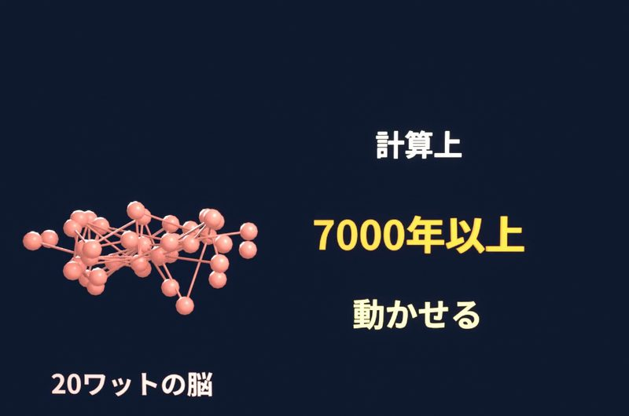
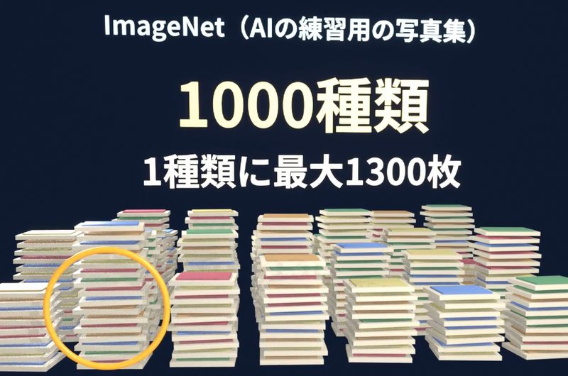
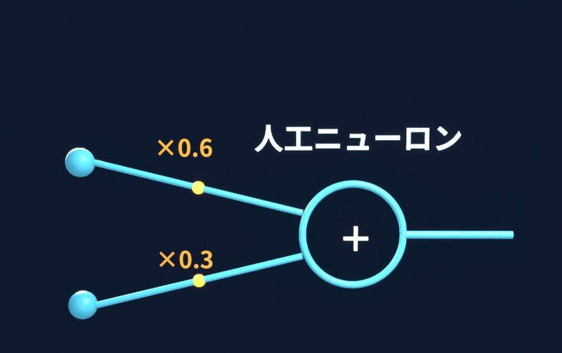
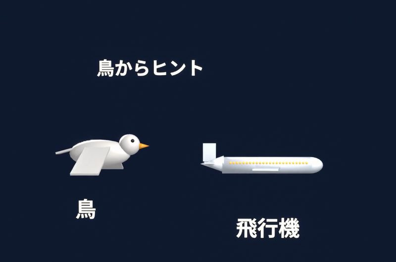

AIは人間の脳をまねて作られましたが、まね方はかなり雑です。人間の脳が使う約20ワットとGPT-3の学習の電力、子どもとImageNetの約128万枚の写真など、数字でAIと脳の違いを3つ比べます。
AIの中身のニューラルネットワークは、脳のニューロンをまねて作られました（仕組みはニューラルネットワークとはで説明しています）。ただ、AIと本物の脳を比べると、違いがたくさんあります。
違い1：電気の使い方
人間の脳が使う電力は、約20ワットと言われています。20ワットは、小さな電球1個くらいの電力です。約20ワットは推定値です。

一方で、2020年に発表されたGPT-3というAIは、学習だけで、推定で約1287メガワット時の電力を使いました。1287メガワット時の電力があれば、20ワットの脳を、計算上は7000年以上動かせます。

7000年は、次の計算で出した数字です。20ワットの脳が1年に使う電力は、20ワット × 24時間 × 365日 ＝ 約175キロワット時です。1287メガワット時（1,287,000キロワット時）を175キロワット時で割ると、約7346年になります。
違い2：覚え方
小さな子どもは、身近な犬を何匹か見るうちに、初めて会う犬も「犬だ」と分かるようになります。
一方で、写真を見分けるAIの練習によく使われるImageNetという写真集には、約128万枚の写真が入っています。写真は1000種類に分けられていて、1つの種類に、多いものでは1300枚の写真があります。AIは、大量の写真を見て、少しずつ見分け方を覚えます。

違い3：部品
本物のニューロンには、たくさんの種類があります。そして、ニューロンどうしは、ドーパミンのような化学物質を使って、信号を伝えています。
一方で、人工ニューロンがしているのは、信号に重みを掛けて、足し合わせる計算だけです。

脳がAIと同じ方法で学習しているかは、分かっていない
AIは、予測と正解のずれが小さくなるように重みを直して、学習します（くわしくはAIの学習とは）。しかし、本物の脳がAIと同じ方法で学習しているのかは、研究者の間でもまだ分かっていません。
AIと脳の関係は、飛行機と鳥の関係に近い
人間は、鳥が飛ぶ様子を観察して、飛行機を考えました。でも、飛行機は羽ばたきません。飛行機は、鳥からヒントをもらいましたが、鳥とはまったく違う作りで空を飛んでいます。

そして、飛行機は、何百人もの人を乗せて、海を越えられるようになりました。鳥は、何百人もの人を運べません。
AIも、電気の使い方、覚え方、部品が、本物の脳とは違います。それでもAIは、大量の文章を学習して、質問に数秒で答えを返せます。
出典
- 脳の電力が約20ワット（推定値）：NIST の研究者の記事（2026-11-11 確認）
- GPT-3 の発表（2020年5月）：Brown ほか（2020）（2026-11-11 確認）
- GPT-3 の学習の電力 約1287メガワット時（推定値）：Patterson ほか（2021）（2026-11-11 確認）
- ImageNet（ILSVRC2012）の学習用 1,281,167枚、1000種類、1種類あたり732〜1300枚：ILSVRC2012 の資料、Hugging Face（2026-11-11 確認）
- ニューロンは化学物質で信号を伝える：Queensland Brain Institute（2026-11-03 確認）
- 脳がAIと同じ方法で学習しているかは、研究が続いている：オックスフォード大学（Lillicrap ほか 2020 の総説）（2026-11-11 確認）
この記事は、短尺動画シリーズ「酒のつまみになるAI」の回を、読み物として書き直したものです。